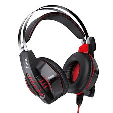

Headphones
Small and fit directly inside the ear canal. Highly portable and often included with mobile devices; may come with various tip sizes for comfort. Completely wireless with no cables connecting the left and right earbuds. Usually come with a charging case and offer convenience for active lifestyles. Use active noise cancellation (ANC) technology to reduce ambient noise. Great for travel or noisy environments, especially in over-ear formats. Designed specifically for gamers, often featuring surround sound, built-in microphones, and customizable sound profiles. May come with LED lighting and comfortable padding for extended play sessions. Designed for physical activity, often featuring sweat resistance and a secure fit. May include features like hooks or fins for stability during movement. Wireless options add convenience and often include Bluetooth connectivity. Many headphones, especially those for gaming or calls, come with built-in microphones for voice communication. Relevant for wireless headphones, battery life varies greatly between models, with some lasting several hours on a single charge. Many headphones feature in-line controls, buttons on the ear cups, or touch-sensitive panels for volume control, play/pause, and skipping tracks.